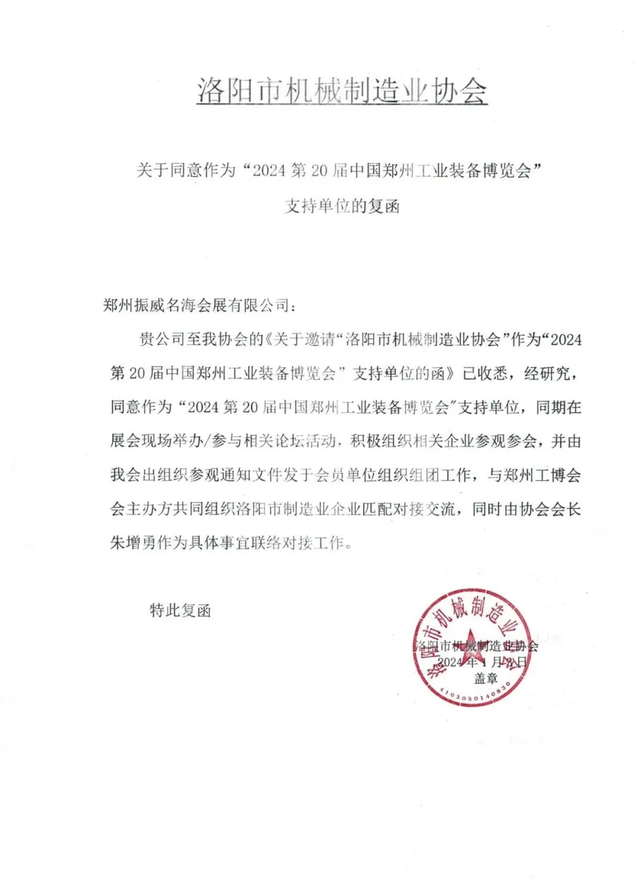

汇聚资源 | 洛阳市机械制造业协会发函支持2024郑州工博会
首页 / 汇聚资源 | 洛阳市机械制造业协会发函支持2024郑州工博会
洛阳市机械制造业协会批复回函作为2024第20届郑州工业装备博览会的支持单位！

近日，郑州工博会组委会与洛阳机械制造业协会，就展会招商、观众组织、论坛会议等，达成深度战略合作，双方将秉承资源共享、合作共赢原则，加强战略合作，充分发挥现有资源，持续为行业发展提供新的动能。届时，协会将带领会员单位到到郑州工博会展会现场参展、参观，为协会会员单位搭建交流贸易平台，了解行业前沿动态和发展趋势，开拓业务范围和市场空间，为会员单位提供学习交流机会，共同推动装备制造产业的发展。
洛阳市机械制造业协会
洛阳市机械制造业协会现有会员1000+(包括个人及企业），个人会员有长期从事一线冶炼、模具、铸造、热处理、焊接、机械加工、液压自动化、耐材、检测、设备维修等业界内享有较高声誉的高级工程师，而且也有上述专业的高级技工。围绕机械制造行业的会员企业有模型、铸铁、铸钢、锻造、铆焊、各类机械加工、热处理及表面处理等专业工厂，已经基本形成完整的生产及加工生态链，同时还有来自全国知名工业生产原材料、设备及备品备件会员企业。
协会充分利用全国重工业基地城市洛阳市大型企业众多行业龙头企业技术领先的优势，以及国家级科研院所多、新兴高新产业园区、科技园区专业人才集中的特点，结合国家大力发展实体经济，建设制造强国的战略，以“引导、整合、监督、自律、服务”为平台发展原则。通过协会的行业广泛影响力、政府政策支持和强大的行业信息资源整合能力，着力打造国内机械制造企业间物资供需精准匹配，业务合作便捷高效，产品销售渠道顺畅的行业信息平台。以产品线上专人推广，线下长期集中展销的大型“机械制造产品永久展会”方式，为行业内企业会员单位提供产品长期展示服务、联采购销服务、产品管理服务、技能人才服务与技术培训服务全覆盖的综合性一站式永久性服务平台。